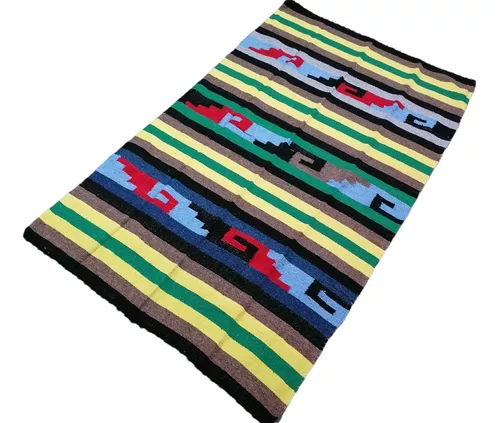

Tapete Tejido
Hermoso tapete tejido a mano con patrones tradicionales y vivos colores, ideal para decorar cualquier espacio.
Detalles del Producto:
- Origen: Oaxaca, México
- Material: Lana 100%
- Técnica: Tejido a mano
- Dimensiones: 150 cm x 100 cm
$3,200 MXN
Agregar al Carrito